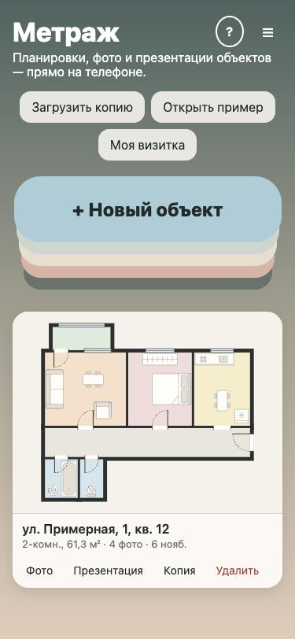
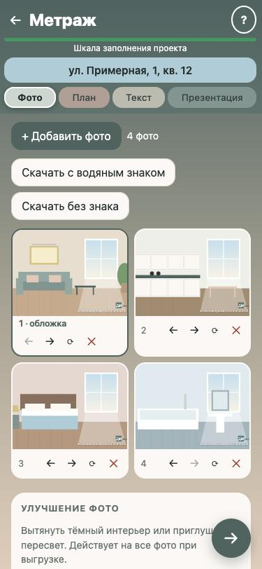
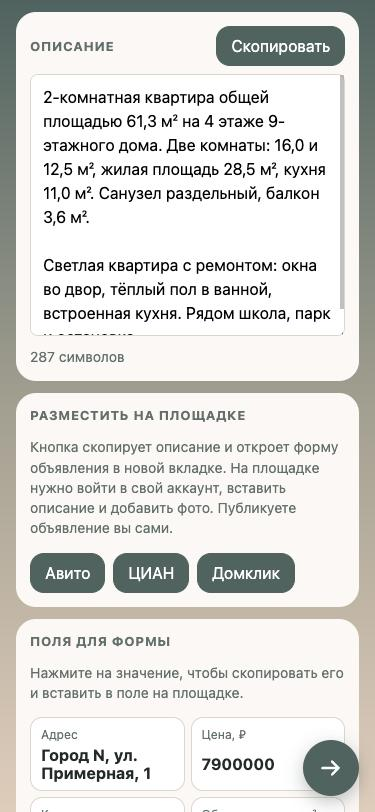
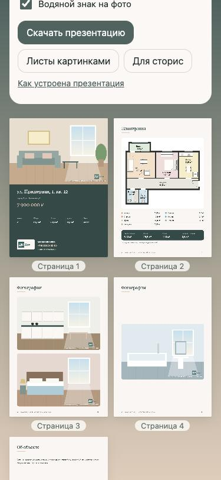
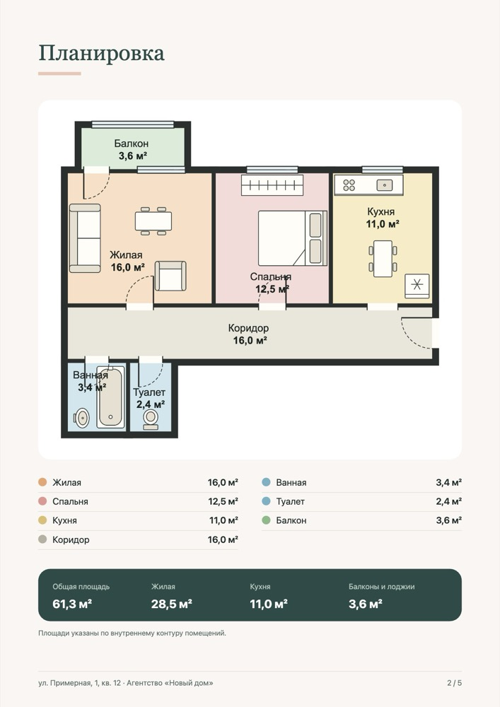
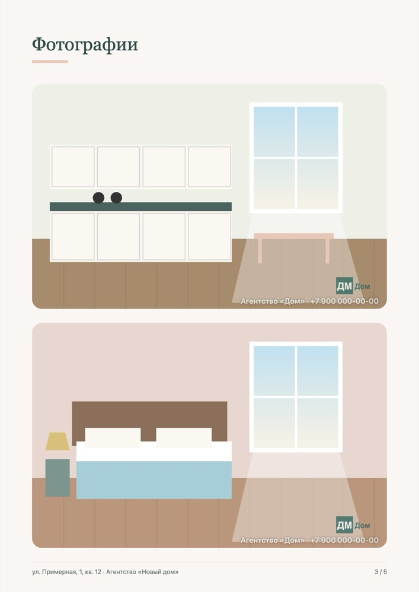
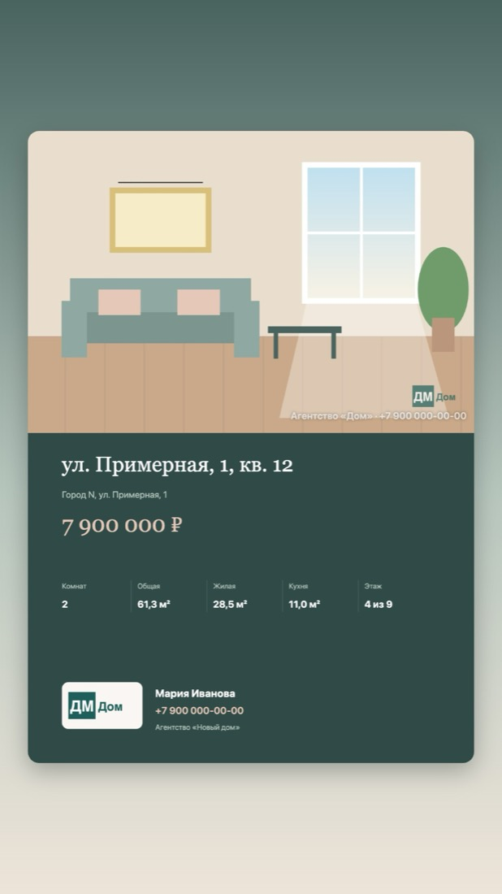
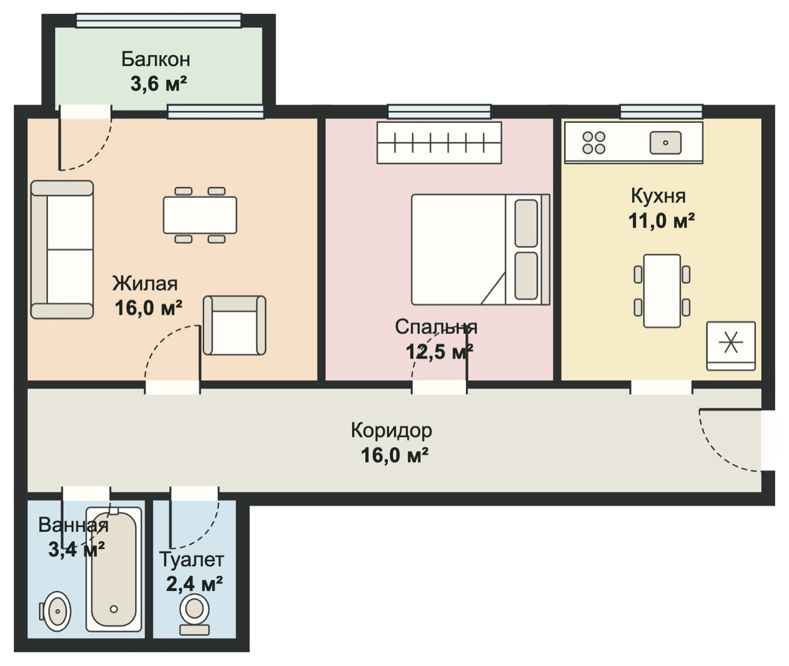

Планировка с площадями
Комнаты, двери, окна и мебель. Площади считаются по внутреннему контуру, как в техпаспорте.
Метраж помогает риелтору подготовить объект к продаже прямо на телефоне. Не нужно ничего ставить из магазина приложений и регистрироваться.
Комнаты, двери, окна и мебель. Площади считаются по внутреннему контуру, как в техпаспорте.
Логотип и подпись на всех фото сразу, улучшение тёмных снимков, выгрузка одной кнопкой.
Заголовок и описание собираются из планировки. Копирование и переход на Авито, ЦИАН и Домклик.
PDF в едином стиле, листы картинками и формат для сторис.
Клиент наводит камеру, и ваш контакт сохраняется в его телефоне.
Фото и планировки не загружаются на сервер. Копию объекта можно сохранить в облако.
Объект проходит пять шагов. Цветные вкладки открывают любой из них, а шкала вверху показывает, сколько уже готово.

Нажмите «Новый объект» и впишите адрес. Все объекты лежат на главном экране, а копию любого из них можно сохранить файлом и открыть на другом устройстве.


Заголовок и описание собираются из планировки: комнаты и их площади, кухня, этаж, санузел, балкон. Допишите своё и нажмите Авито, ЦИАН или Домклик: описание скопируется, а форма объявления откроется в новой вкладке. Цена, площади и этажи копируются по одному, чтобы вставить их в поля формы.

Обложка с ценой и главными цифрами, планировка с таблицей площадей, фото и ваше описание. Скачайте PDF, листы картинками или в формате сторис, чтобы выложить в соцсети.
Пример на вымышленном объекте. Цвета, логотип и контакты берутся ваши.




Заполните контакты один раз. Метраж соберёт картинку-визитку с QR-кодом: клиент наводит камеру телефона, и ваш контакт с именем, телефоном, почтой и соцсетями сохраняется у него. Интернет для этого не нужен.
Визитку можно отправить в мессенджер, скачать картинкой или файлом контакта.
Сейчас все функции бесплатны: сервис проходит тестирование.
Нет. Метраж открывается в браузере. На телефоне его можно добавить на экран «Домой»: на iPhone через «Поделиться» → «На экран Домой», на Android через меню браузера. Тогда он запускается с иконки, как обычное приложение.
Только на вашем устройстве, в памяти браузера. На сервер они не отправляются. Поэтому на другом телефоне их не будет, а если очистить данные браузера, они удалятся. Нажмите «Копия» на карточке объекта и сохраните файл в облако или отправьте себе.
Сохраните копию объекта, откройте Метраж на новом устройстве и нажмите «Загрузить копию». В файле копии есть и планировка, и все фото.
Да, после первого открытия. Интернет нужен только чтобы перейти на сайт площадки или что-то отправить.
Да. Сфотографируйте план ровно сверху и загрузите его подложкой. Задайте масштаб по одной стене с известной длиной, и Метраж попробует сам найти комнаты. Автораспознавание даёт черновик: проверьте комнаты и площади, при необходимости поправьте их или обведите комнаты сами.
Площадь считается по внутреннему контуру комнаты, как в техпаспорте, а стены в неё не входят. Точность зависит от того, насколько точно нарисованы комнаты. Если нужна площадь строго по документам, впишите её вручную в свойствах комнаты.
Нет. Он копирует описание и открывает форму объявления на Авито, ЦИАН или Домклике. Вы входите в свой аккаунт, вставляете текст, добавляете фото и публикуете сами. Доступа к вашим аккаунтам у Метража нет.
Да. Логотип и подпись загружаются один раз в настройках водяного знака и подставляются на фото и в презентацию всех объектов.
На iPhone, Android и компьютере в современном браузере: Safari, Chrome, Яндекс Браузер, Edge. Удобнее всего на телефоне, но рисовать планировку на большом экране тоже удобно.
Начните с примера, чтобы посмотреть все разделы, или сразу создайте свой объект.
Открыть Метраж